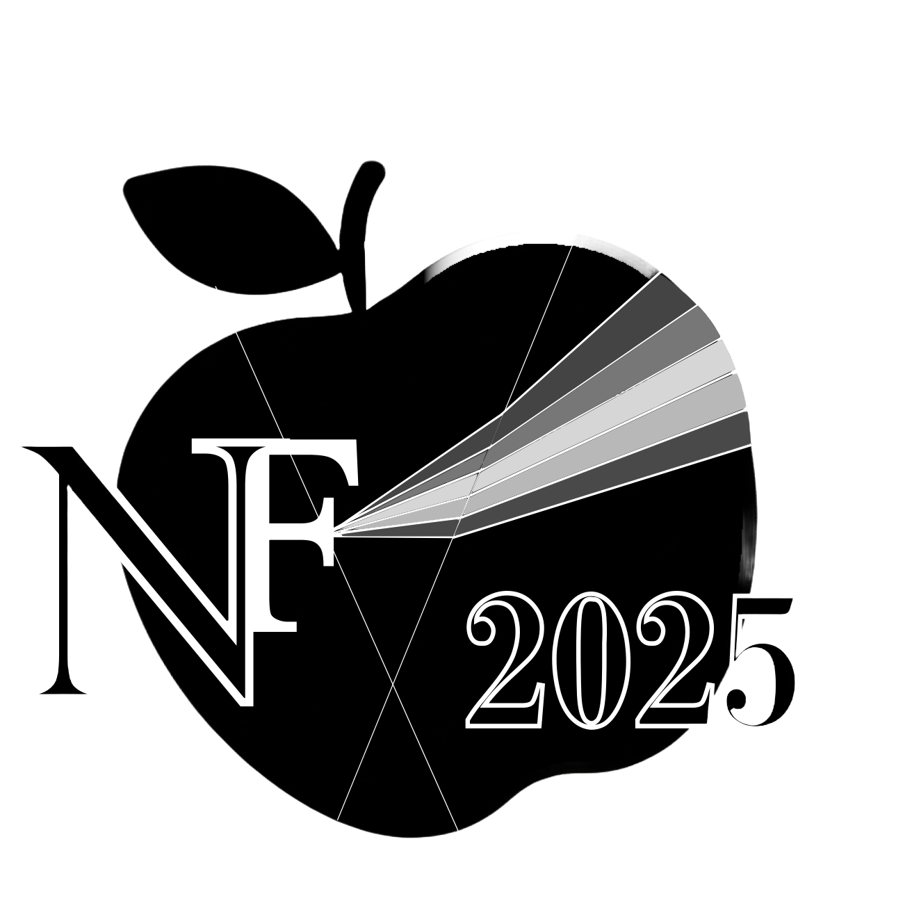

<!-- nav.html -->
 <div style="background-color: rgb(133, 2, 62);">
 </div>
 <style>
  .bg-kyushu-purple {
    background-color: rgb(133, 2, 62);
  }
 </style>
<nav class="bg-kyushu-purple py-4">
  <div class="container mx-auto px-1 py-0 flex justify-between items-center">
    <!--コンテナとmx-autoで要素全体を程よく配置、pはパディングの設定、flex以下は各要素を程よく配置-->
    <a href="index.html" class="flex items-center space-x-2">
      <!-- ロゴ画像のサイズ調整,sm:小さい画面用,-myで上下のマイナス余白調整 -->
      <div class="text-base sm:text-xl font-bold text-white">ニュートン祭2025</div>
      <!-- ↑今年仕様にする -->
    </a>
    <div>
      <ul class="flex space-x-2 sm:space-x-4 text-xxs sm:text-base sm:text-lg">
        <li><a href="https://www.instagram.com/newtonfes_2025?igsh=MWZqbmpsMGgzN282NA==" class="text-white hover:text-blue-500">SNS</a></li>
        <!-- ↑リンクを今年のインスタもしくはXアカウントにする -->
        <li><a href="recreation.html" class="text-white hover:text-blue-500">イベント</a></li>
        <li><a href="panphlet.html" class="text-white hover:text-blue-500">研究室紹介</a></li>
      </ul>
    </div>
  </div>
</nav>
